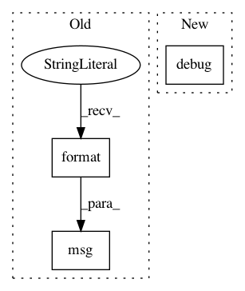

c241a91f4e99a8a8e158ef89fe609d6932688911,scanpy/preprocessing/_normalization.py,,normalize_total,#Any#Any#Any#Any#Any#Any#Any#Any#,24
Before Change
logg.msg(" finished", t=True, end=": ")
logg.msg("normalized adata.X")
if key_added is not None:
logg.msg("and added \"{}\", counts per cell before normalization (adata.obs)"
.format(key_added))
return dat if not inplace else None
After Change
logg.debug(" finished", t=True, end=": ")
logg.debug("normalized adata.X")
if key_added is not None:
logg.debug(f"and added {key_added!r}, counts per cell before normalization (adata.obs)")
return dat if not inplace else None
In pattern: SUPERPATTERN
Frequency: 3
Non-data size: 3
Instances
Project Name: theislab/scanpy
Commit Name: c241a91f4e99a8a8e158ef89fe609d6932688911
Time: 2019-06-03
Author: flying-sheep@web.de
File Name: scanpy/preprocessing/_normalization.py
Class Name:
Method Name: normalize_total
Project Name: theislab/scanpy
Commit Name: c241a91f4e99a8a8e158ef89fe609d6932688911
Time: 2019-06-03
Author: flying-sheep@web.de
File Name: scanpy/preprocessing/_deprecated/highly_variable_genes.py
Class Name:
Method Name: filter_genes_dispersion
Project Name: theislab/scanpy
Commit Name: c241a91f4e99a8a8e158ef89fe609d6932688911
Time: 2019-06-03
Author: flying-sheep@web.de
File Name: scanpy/preprocessing/_highly_variable_genes.py
Class Name:
Method Name: _highly_variable_genes_single_batch